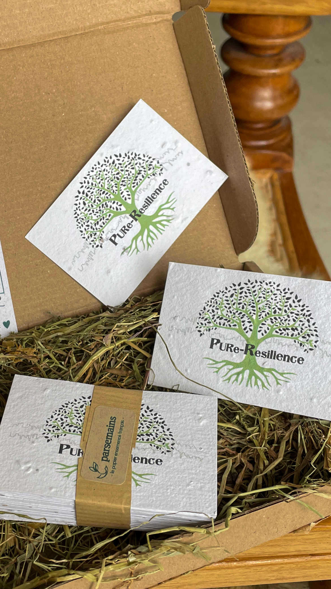
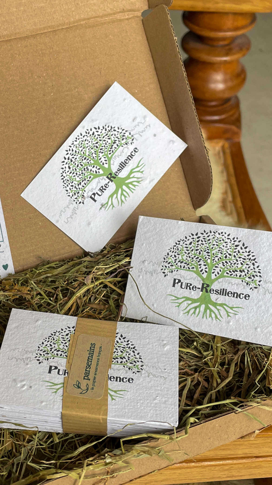
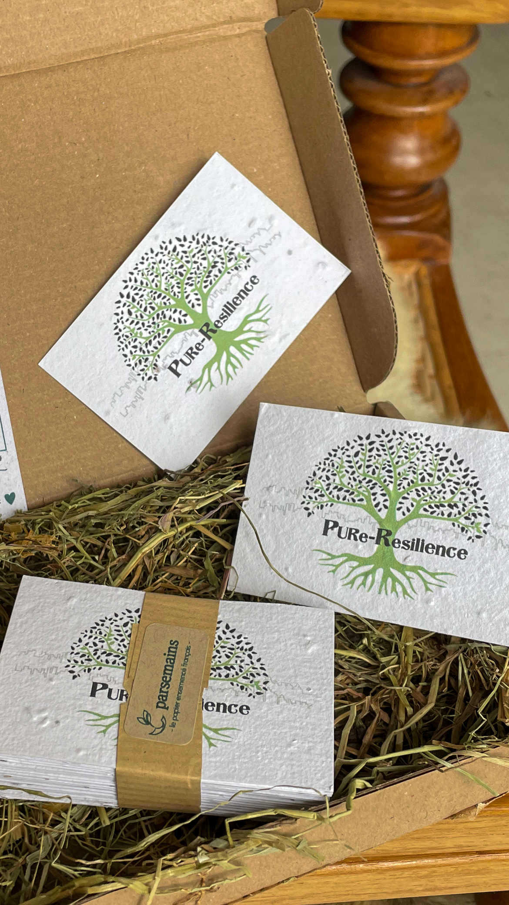

PURe-Resilience, une entreprise émergente œuvrant à la renaturation des milieux urbains et à l’assainissement des sols, avait besoin d’une identité visuelle pour gagner en notoriété et en visibilité. Cette identité vise à harmoniser la création naturelle et humaine. Dans un contexte où le réchauffement climatique et la pollution représentent des enjeux cruciaux, j’ai souhaité traduire l’idée d’une alliance saisissante entre urbanisation et végétation, incarnée par PURe-Resilience.
PURe-Resilience, dedicated to the restoration of urban ecosystems and soil remediation, is an emerging company that needed a visual identity to build recognition and visibility. This identity seeks to unite natural and human creation. In a context where climate change and pollution are critical challenges, I aimed to express the concept of a striking fusion between urbanization and vegetation, crafted by PURe-Resilience.
Juin 2024 - Projet Personel.
